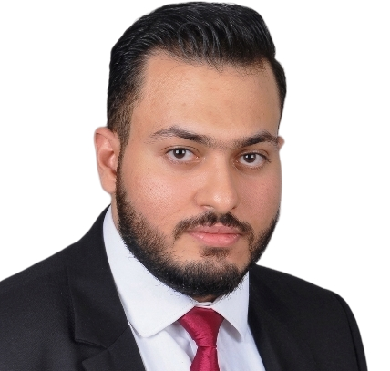
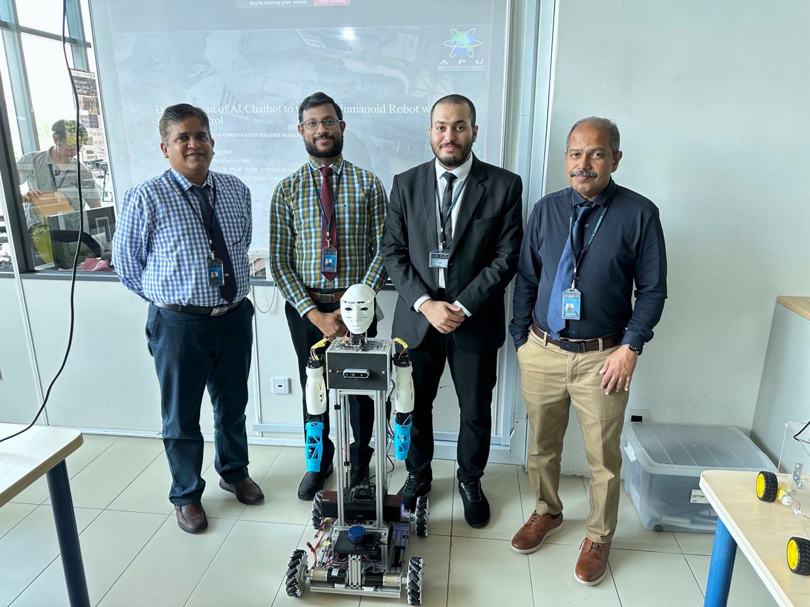
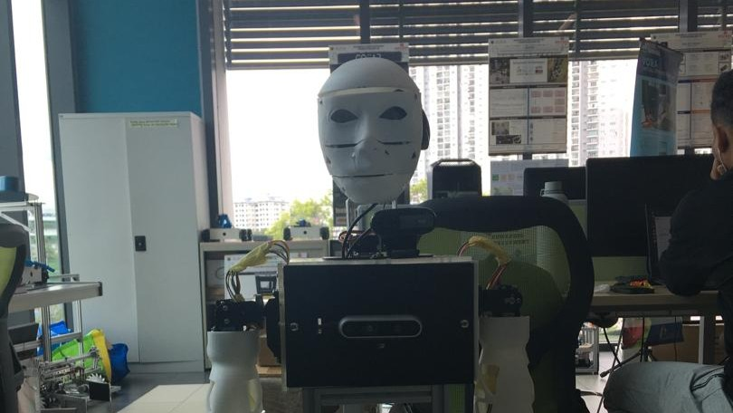
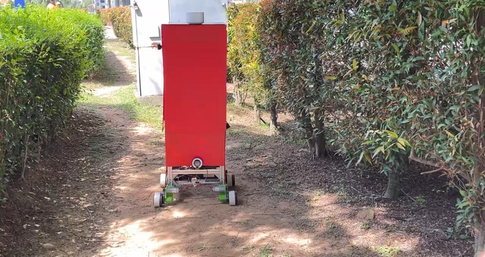
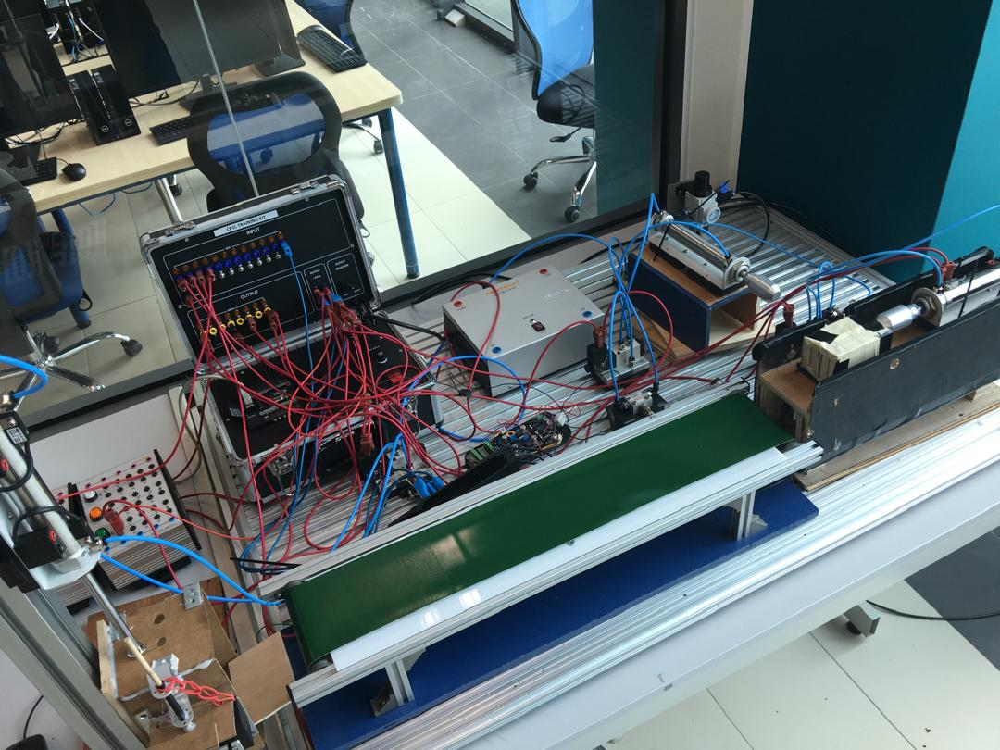
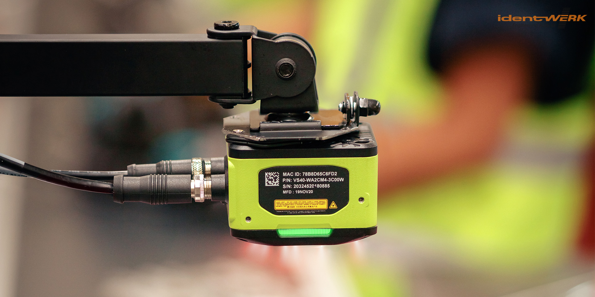
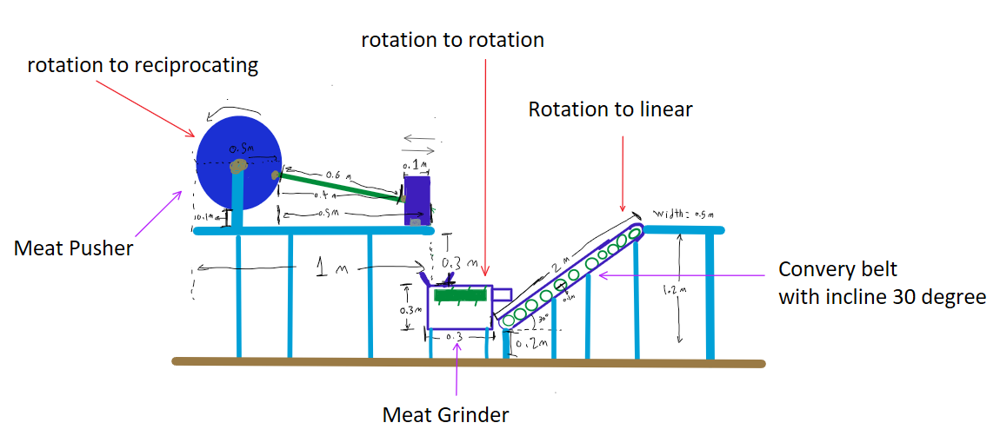
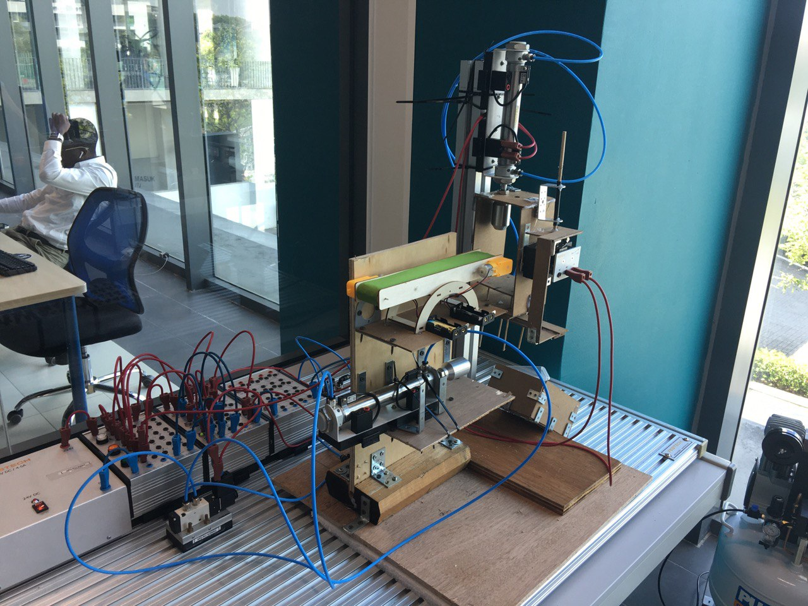
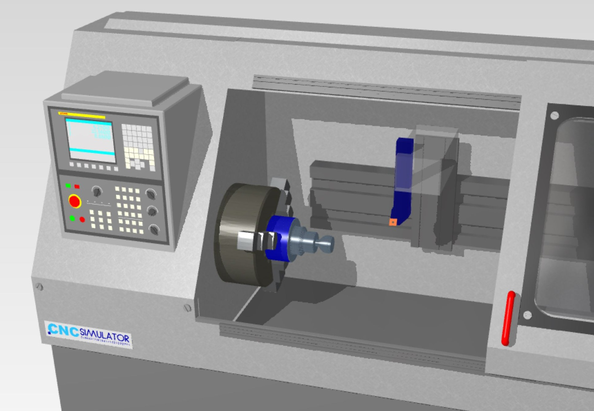

Mechatronics Engineer

Building vision systems that catch what humans miss,
robots that listen, and automation that actually ships.
The short version
I got into mechatronics engineering to build systems that perceive, decide, and act, bridging the gap between software and the physical world.
At Control Easy in Malaysia, I developed machine vision inspection systems for a production environment. I designed and deployed a scratch detection system from concept through final assembly, iterating on both hardware and software to achieve reliable defect identification. When my initial pin-measurement approach did not fully meet requirements, I redesigned the system to incorporate inter-pin distance measurement, delivering an approved solution. I also developed C# interfaces for real-time camera control and data processing, and engineered a universal camera mounting system through multiple 3D-printing iterations.
At AVIS in Egypt, I worked as an ICT Draftsman, reviewing network infrastructure drawings for hotels, hospitals, and mixed-use developments. My tasks included counting network elements, checking layouts, and tracing single-line diagrams to identify rack connections. Beyond my core responsibilities, I developed an AI-powered symbol counting tool using Vision-Language Models and automated detection techniques to accelerate drafting workflows. I also prototyped an application for automated single-line diagram generation, receiving positive feedback from the engineering team as a potential productivity tool.
2 internships. 2 countries. 2 disciplines. Still learning. Still building.

School
Where I've Been
Most Recent Work
Most of these have videos. The ones that don't... I forgot to press record.







Credentials
Get In Touch
I'm based in Egypt but open to relocation. If your project involves cameras, robots, or both — let's talk.